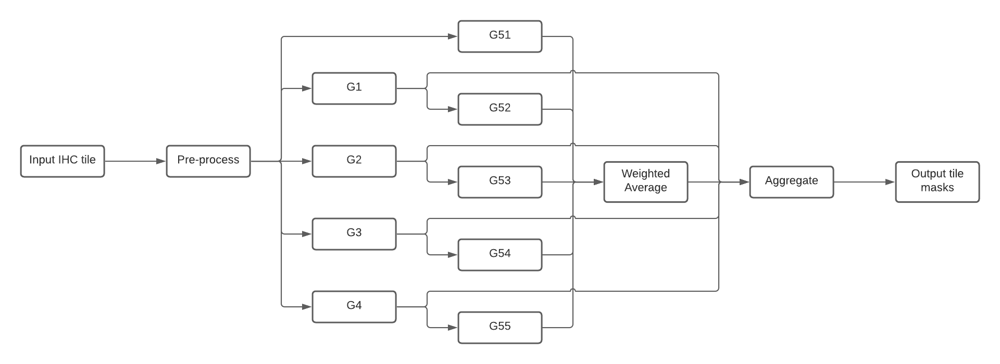

Deployment
Docker
We provide a Dockerfile that can be used to run the DeepLIIF models inside a container. First, you need to install the Docker Engine. After installing the Docker, you need to follow these steps:
- Download the pretrained model and place them in DeepLIIF/checkpoints/DeepLIIF_Latest_Model.
- Change XXX of the WORKDIR line in the DockerFile to the directory containing the DeepLIIF project.
- To create a docker image from the docker file:
docker build -t cuda/deepliif .
The image is then used as a base. You can copy and use it to run an application. The application needs an isolated environment in which to run, referred to as a container.
- To create and run a container:
docker run -it -v `pwd`:`pwd` -w `pwd` cuda/deepliif deepliif test --input-dir Sample_Large_Tissues
When you run a container from the image, the deepliif CLI will be available.
You can easily run any CLI command in the activated environment and copy the results from the docker container to the host.
Dask deployment
By default, DeepLIIF networks are deployed using a combination of TorchScript and Dask. Torchscript is used to serialize and optimize the models starting from a pre-trained model checkpoint and the Python code that describes the models. For more details check out the Serialize Model section on the documentation.
Models parallelization and interdependencies are expressed using Dask Delayed
functions that allow us to build a computational graph with minimal code annotations. The concrete implementation
can be found on the run_dask() function under the deepliif.models module.
Torchserve deployment
This section describes how to run DeepLIIF's inference using Torchserve workflows. Workflows con be composed by both PyTorch models and Python functions that can be connected through a DAG. For DeepLIIF there are 4 main stages (see Figure 3):
Pre-processdeserialize the image from the request and return a tensor created from it.G1-4run the ResNets to generate the Hematoxylin, DAPI, LAP2 and Ki67 masks.G51-5run the UNets and applyWeighted Averageto generate the Segmentation image.Aggregateaggregate and serialize the results and return to user.
 Composition of DeepLIIF nets into a Torchserve workflow.
In practice, users need to call this workflow for each tile generated from the original image.
A common use case scenario would be:
- Load an IHC image and generate the tiles.
- For each tile:
- Resize to 512x512 and transform to tensor.
- Serialize the tensor and use the inference API to generate all the masks.
- Deserialize the results.
- Stitch back the results and apply post-processing operations.
The next sections show how to deploy the model server.
Prerequisites
1. Install Torchserve and torch-model-archiver following these instructions.
In MacOS, navigate to the model-server directory:
cd model-server
python3 -m venv venv
source venv/bin/activate
pip install torch torchserve torch-model-archiver torch-workflow-archiver
2. Download and unzip the latest version of the DeepLIIF models from zenodo.
wget https://zenodo.org/record/4751737/files/DeepLIIF_Latest_Model.zip
unzip DeepLIIF_Latest_Model.zip
Package models and workflow
In order to run the DeepLIIF nets using Torchserve, they first need to be archived as MAR files.
In this section we will create the model artifacts and archive them in the model store.
First, inside model-server create a directory to store the models.
mkdir model-store
For every ResNet (G1, G2, G3, G4) run replacing the name of the net:
torch-model-archiver --force --model-name <Gx> \
--model-file resnet.py \
--serialized-file ./DeepLIIF_Latest_Model/latest_net_<Gx>.pth \
--export-path model-store \
--handler net_handler.py \
--requirements-file model_requirements.txt
and for the UNets (G51, G52, G53, G54, G54) switch the model file from resnet.py to unet.py:
torch-model-archiver --force --model-name <G5x> \
--model-file unet.py \
--serialized-file ./DeepLIIF_Latest_Model/latest_net_<G5x>.pth \
--export-path model-store \
--handler net_handler.py \
--requirements-file model_requirements.txt
Once all the models have been packaged and made available in the model store, they can be composed into a workflow archive. Finally, create the archive for the workflow represented in Figure 3.
torch-workflow-archiver -f --workflow-name deepliif \
--spec-file deepliif_workflow.yaml \
--handler deepliif_workflow_handler.py \
--export-path model-store
Run the server
Once all artifacts are available in the model store, run the model server.
torchserve --start --ncs \
--model-store model-store \
--workflow-store model-store \
--ts-config config.properties
An additional step is needed to register the deepliif workflow on the server.
curl -X POST "http://127.0.0.1:8081/workflows?url=deepliif.war"
Run inference using Python
The snippet below shows an example of how to cosume the Torchserve workflow API using Python.
import base64
import requests
from io import BytesIO
import torch
from deepliif.preprocessing import transform
def deserialize_tensor(bs):
return torch.load(BytesIO(base64.b64decode(bs.encode())))
def serialize_tensor(ts):
buffer = BytesIO()
torch.save(ts, buffer)
return base64.b64encode(buffer.getvalue()).decode('utf-8')
TORCHSERVE_HOST = 'http://127.0.0.1:8080'
img = load_tile()
ts = transform(img.resize((512, 512)))
res = requests.post(
f'{TORCHSERVE_HOST}/wfpredict/deepliif',
json={'img': serialize_tensor(ts)}
)
res.raise_for_status()
masks = {k: deserialize_tensor(v) for k, v in res.json().items()}